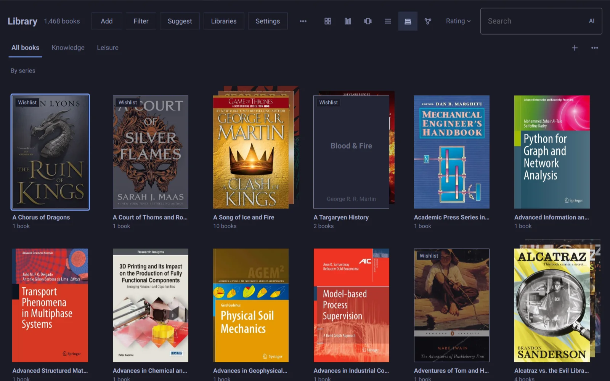
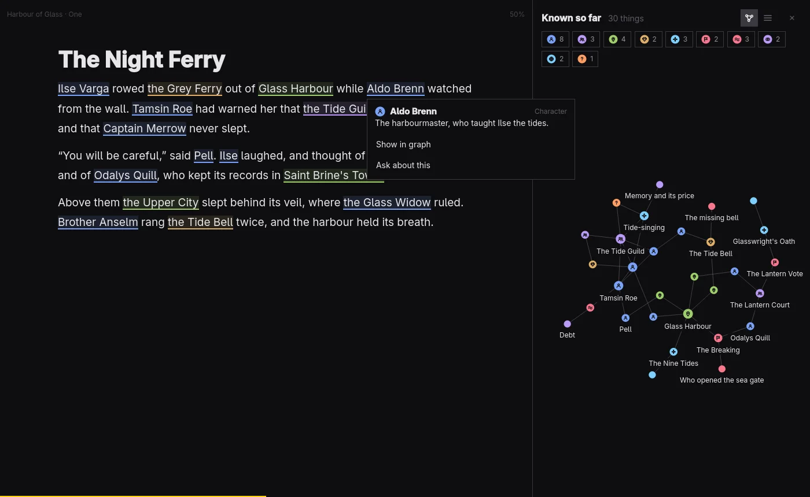
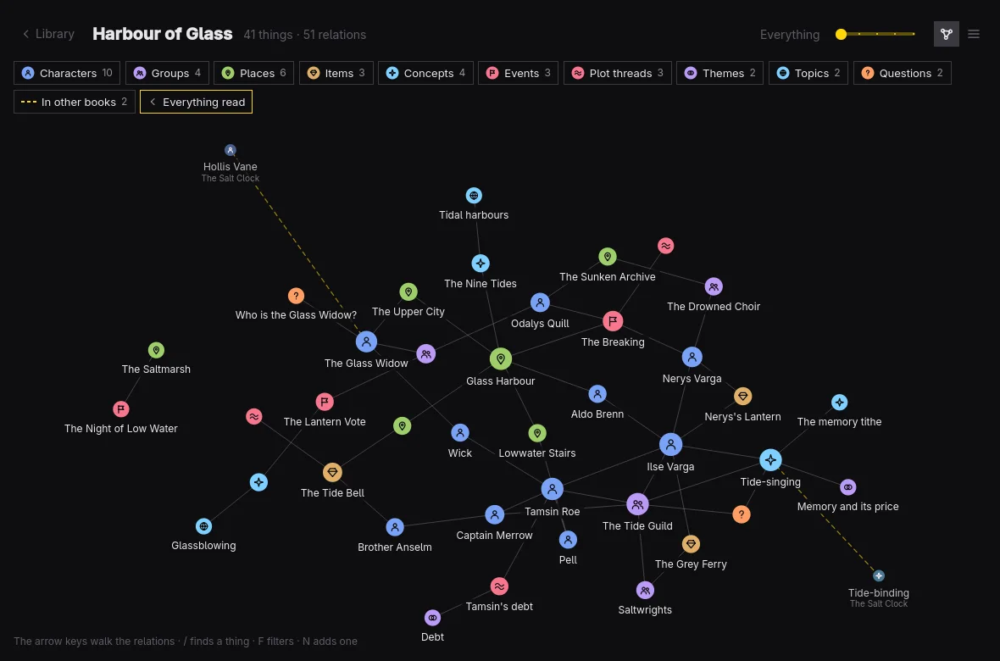
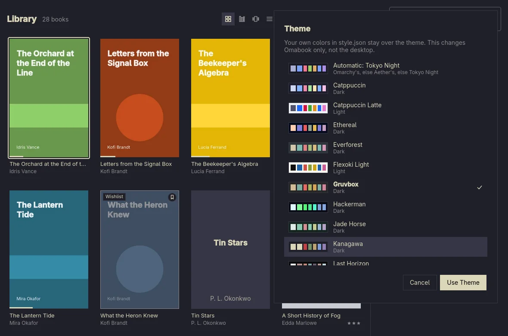

~ $omabook open1,468 books · graph grows as you read · ? for keys~ $
The ebook library that lives on your keyboard.
Omabook is the ebook library and reader for Omarchy. Its knowledge graph links the people, places, ideas and events of every book you read, in the order you met them, and never past the page you are on.
The shelf. Press 1 to 5 for covers, spines, carousel, list or stacks.2
One shelf, five ways
Covers, spines, carousel, list and stacks. Each library remembers its own.
Spines (2).

Stacks (5), a pile per series.
6
The knowledge graph
Link ideas, people and places across every book you read.
Omabook is the ebook library and reader for Omarchy. Its knowledge graph links the people, places, ideas and events of every book you read, in the order you met them, and never past the page you are on.
Each fact with its moment
What a book says of a person changes as it goes on. Every version is kept with the page it was revealed on.
Spoiler-safe
Anything past your furthest page stays hidden, in the picture, the search and what the AI is told.
Timelines
Events in the order they happen, not the order you read them. A flashback lands where it belongs.
Across books
Themes, topics and ideas are shared nodes. Dashed lines show what one book echoes in another.
Yours to edit
Add a thing, rename it, fold two into one. What you put in wins over what the model noted.

In the text, the names the map knows are marked in the color their kind has in the graph. (demo library of made-up books)

Dashed lines tie a book's things to the other books they echo. (demo library of made-up books)
Put the course books in a collection called Study. That collection is a graph of its own, so the novels you read for fun never leak into it. Three books describe the same war. Each event goes on real history, so the chronology lines them up on one ruler, by date, with the page where each book said it. Where two books disagree, the contradiction is ringed and says who said what.
Reading
Back to book three, after a month
Press C and the companion tells you where things stand in under 200 words. Press W for who is who. Press M and the map beside the page shows the people and places you have met, marked in the text itself. Everything stops at your page, so nothing is spoiled, not by the search and not by the AI.
Research
One idea, forty books
Search knows:“control theory” and finds every book that touched it, because a topic is one node shared by all the books that mention it. Connections across books say whether a passage echoes, contrasts with or answers another. Pages in a notebook link back to the passage. Export the graph as GraphML, Graphviz or Cypher when it is time to write.
,
Made for Omarchy
Theme, keys and launcher, the way the rest of the desktop works.
Follows the theme, live
Change the Omarchy theme and the shelf, the reader and the graph follow it while the app runs. Light or dark, the colors are the theme's.
Every key is a file
Keys, colors, views and panels are files in ~/.config/omabook/, picked up as you save. ? shows the keys as bound now.
Launcher and voxtype
It opens from the launcher like any Omarchy app. Where voxtype is installed, it does the dictation and the transcribing.
The default agent
Automatic uses the agent you picked with omarchy default agent, and follows it when you switch.

Arrow through the themes and the whole window shows each one. (demo library of made-up books)A
AI, a first-class citizen
Local first. Hosted only where you say so.
A provider per capability
Six capabilities, each with its own provider and model. Ollama on this computer first; Omarchy’s local models, any OpenAI-compatible server, a hosted API or a command if you choose.
Hosted only where you allow it
Each capability has its own say on whether a hosted provider may be used. Turn AI off and nothing is asked, nothing is listened to.
Speak and hear
Dictate a margin note. Ask the companion by voice and hear the answer. Say “next chapter” or “go to chapter 5” in English, German, French, Dutch or Spanish.
Handwriting and recordings
Write in the margins with a pen and have it read. Add an MP3 or M4B and it becomes a book you can search by what is said.
Test every row
A Test button on each row sends one small real request through that exact provider, server, key and model, and says what happened. A missing model is found or downloaded with one press.
The six capabilities
Answers
The reading companion, catch-ups, who is who, asking about your library.
Quick work
Builds the knowledge graph, tidies the library, judges look-ups, understands voice commands the grammar doesn’t know.
Handwriting
Reads ink in margins and notebooks. A server of its own if you want one.
Speech to text
Dictation and recordings written out. voxtype first, then whisper.cpp, then a server.
Text to speech
Spoken answers and read-aloud, by the voice you choose.
Storyteller writes books. Notebooks holds pages and ink.
Storyteller 1.5
Writes you a book. Say what you are in the mood for: it builds a world, invents the people, plans a plot with twists seeded before they pay off, and writes chapter one. The next is written while you read the one before. Everything it writes is original by rule. It is also a worked example of a plugin.
Notebooks 1.0
Notebooks of pages on paper: lined, squared, dotted, music staves or Cornell. Write with a pen, type, add pictures and recordings. Handwriting is read, recordings are transcribed, and a page links to the passage you were reading. Export as PDF or Markdown.
Share a collection. Back up from one always-on computer, soon.
Spaces
A space is a body of data with an owner and a say over who may write it. Yours is the personal space. A collection you publish is a space with one writer. A household library or a book club is a shared space with several. Each is signed, and a member removed is refused from then on. (A tenant is something else: the part of the graph a top-level collection keeps to itself.)
The hub Coming in 0.5
The hub is an Omabook without a window that stays on: it keeps your libraries for your computers, serves phones and e-readers, does background work and takes encrypted snapshots with restic. It is a peer, not a boss: without it, computers sync directly as they do today.
The hub is designed, not built. Spaces and sync over ssh are built today.